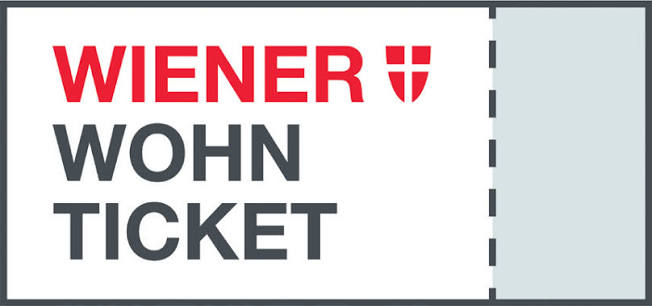

Wiener Wohnen Ticket Points Calculator
An unofficial calculator for estimating Wiener Wohnen ticket points from published allocation guidelines.
View repository ↗
Practical tools built for focused, everyday use cases.

An unofficial calculator for estimating Wiener Wohnen ticket points from published allocation guidelines.
View repository ↗